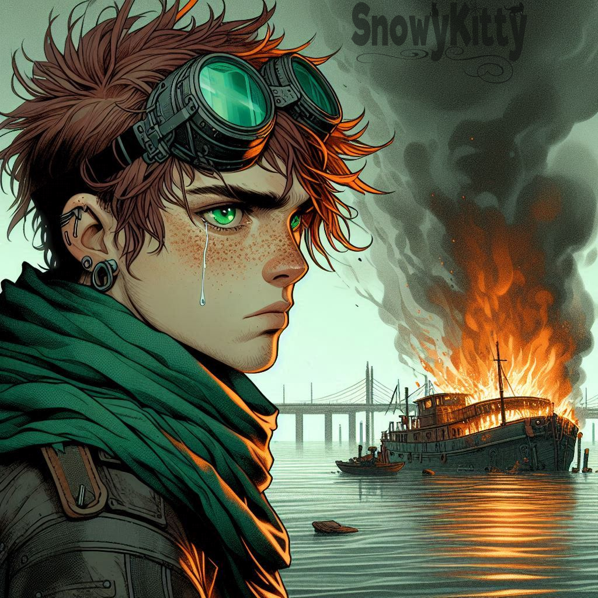

Geck O'Riley
Role: Demolitions Expert Age: 26 Species: Human
"Aye, we built fuckin' Stonehenge before we had two-ply to wipe our arses with, alrigh'? Don't ye be talkin' yer shite about humans!"

There's loud, and then there's Geck O'Riley. A walking middle finger to the Empire in flight goggles and a smirk, Geck is the Shrike's
demolitionist and resident chaos artist. He's the kind of man who'll whistle a tune while wiring a bomb, call a Flyu
commander a “blueberry tart” to his face, and walk away laughing before the blast wave hits.
Born on Sanctuary 23 under the name George Paul O'Riley, Geck grew up on stories of ancient Irish rebels and Celtic gods, heroes who fought oppression
with wit, fire, and faith. He learned early that the Empire feared laughter almost as much as it feared defiance.
But his childhood ended the day he and his parents were taken as pets by a Flyu aristocrat who liked showing off
his “tame humans.” Geck escaped when he was barely a teenager, swearing to come back for his parents, falling in with
some rougue groups along the way. During these eyars, he discovered two talents: tearing things up and pissing people off.
When he finally returned for his parents, they were too far gone, “domesticated,” their minds and spirits broken by the Empire's conditioning.
He did what Geck does best. He made it loud. The barge that held them and their captors went up in a blaze that
could be seen for miles.
Since then, Geck has been a permanent thorn in the Empire's side: a saboteur and morale officer for the HLA. He's as
brilliant as he is unhinged, a strategist hiding behind a manic grin and a bottle of cheap whiskey. Every explosion,
every insult, every laugh is his way of spitting in the Empire's face. He talks to his bombs like friends, swears by
old gods, and keeps his grandmother's ratty green scarf wrapped around his neck as a charm of luck and remembrance.
Beneath the madness, though, lies a razor-sharp mind and a heart that still aches for what was stolen from him. To the HLA,
Geck is chaos personified, but also the beating heart of the crew. Because even in the darkest hours, he always finds something to laugh about.